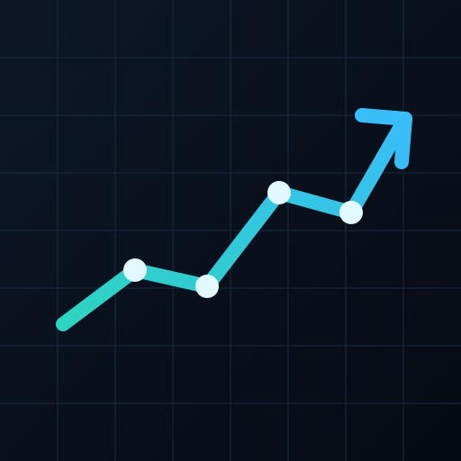

Market overview
Demo universe · click a row to chart it
| Symbol | Price | Day | RSI | Mkt cap | Sentiment | Trend |
|---|

Multi-asset analytics · local-first
Research, probabilistic forecasts, backtests, risk decomposition, constrained optimization, screening and tax-lot analysis in one installable app. Every calculation runs on your device — Android, iPhone, tablet, laptop or desktop — and keeps working offline.
Demo universe · click a row to chart it
| Symbol | Price | Day | RSI | Mkt cap | Sentiment | Trend |
|---|
S&P 500 ETF
Transparent trend, momentum and RSI checks — not recommendations.
Install it from the browser on Android, iOS, Windows, macOS, Linux or ChromeOS. The same cached app opens without a connection.
Asset intelligence
One view for price action, multi-horizon performance, relative strength, fundamentals, macro context, correlation and sentiment — every line computed locally.
Absolute return and excess return versus the S&P 500
Asset vs S&P 500, rebased to 100 · 1 year
Peak-to-trough decline · 2 years
—
| Metric | Value | Metric | Value |
|---|
Rates, inflation, volatility and liquidity
Daily returns · 1 year · cross-asset dependence
—
Local synthetic feed · audit before trusting any model output
Predictive intelligence
A transparent ensemble of drift, trend and ridge-factor models, stress-tested with walk-forward holdouts. Intervals — not certainties — are the primary output.
Median path with 50 / 80 / 95% simulation intervals
Trend, volatility and drawdown state
Bear / base / bull terminal prices
Monte Carlo density at horizon
Out-of-sample error drives each weight
Honest holdout metrics, not in-sample fit
Largest standardised contributions to the factor signal
Coverage behind this forecast
Forecasts are probability distributions, not price targets. The ensemble combines three simple models and reports its own walk-forward error. Synthetic demo data understates real-world regime breaks, gaps and survivorship bias. Nothing here is investment advice.
Research
Signals are computed from closing prices and executed at the next open, with commission and slippage. No lookahead.
Strategy vs buy & hold
Peak-to-trough decline
—
| Entry | Exit | Bars | Entry price | Exit price | P&L | Return |
|---|
Allocation
Long-only projected-gradient optimization with a per-asset weight cap. Choose an objective, then inspect risk contributions.
Constrained long-only allocation
| Asset | Weight | Risk contribution |
|---|
Risk-aversion sweep over the selected universe
Weights and marginal risk
Risk lab
Correlated Monte Carlo paths, percentile bands, risk contributions and historical-style stress scenarios.
5th–95th percentile band with sample paths
Contribution to total portfolio variance
Illustrative sector shocks applied to the current allocation
| Scenario | Portfolio shock | Value impact | Largest drag |
|---|
Discovery
Rank assets by trend, momentum, RSI and liquidity. Filters combine so you can see only the rows that matter.
—
| Symbol | Sector | Price | Day | 3M | RSI | Score | Signals |
|---|
Ledger
Track holdings with average cost, unrealized P&L and lot-level disposal. Data stays in this browser.
Marked at the latest demo close
| Symbol | Shares | Avg cost | Price | Value | Unrealized |
|---|
Buys create a lot; sells use FIFO
Prices default to the latest demo quote.
Estimate the realized gain under each disposal method — illustrative only.
| Method | Cost basis | Realized gain | Tax-efficient rank |
|---|
This compares lot accounting only. It does not model short/long-term rates, wash sales or local tax rules.
Monitoring
Rules run locally against the latest demo data. They are saved in this browser and evaluated when you tap Check now, with a 30-minute cooldown per rule.
Price, daily move, RSI or volume
0 rules
Most recent first · 30-minute cooldown per rule
Platform
InvestorKit is a standards-based progressive web app with an optional Cloudflare Worker backend. Static hosting works offline; Workers mode adds live server-side market data and forecast execution.
Chrome and Edge show an install icon in the address bar. The install button in the header appears when the browser supports it.
localStorage for portfolio, alerts and theme. Clearing site data resets it.
The same numerical core is covered by the Node test suite (npm test).
The Swift package adds InvestorKit, an XCTest suite, a demo executable and a
native SwiftUI surface where Apple platforms are available.
Optional server-side deployment with the same app shell and numerical engine
Deploy the included worker/ project to Cloudflare Workers. The Worker serves the PWA through static assets and exposes live endpoints:
Without the Worker, the same build stays fully functional as an offline-first static PWA.
The bundled/static market data is synthetic and intended for demonstration, testing and UI evaluation. In Cloudflare Workers mode, prices and macro proxies come from the unofficial Yahoo Finance chart API and may be delayed or incomplete; fundamentals and headlines remain synthetic. Nothing here is investment advice. Backtest results are sensitive to costs, slippage, survivorship and the chosen sample; a positive historical result does not imply future performance.